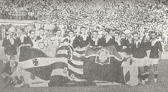

Hisória
O Vasco foi fundado como um clube de remo em 1898, por um grupo de 63 rapazes, imigrantes portugueses e luso-descendentes, reunidos no bairro da Saúde.[39][40] O nome escolhido foi Club de Regatas Vasco da Gama, pois naquele ano eram comemorados os 400 anos da viagem do célebre almirante à Índia. Já filiado à União de Regatas, a estreia do Vasco em competições oficiais ocorreu a 4 de junho de 1899, na enseada de Botafogo. Ali, a baleeira "Volúvel", de seis remos, venceu o primeiro páreo na categoria júnior, a primeira vitória do Vasco no remo.[39] Em 24 de novembro de 1905, o clube conquistou o primeiro Campeonato Carioca de Remo, numa competição que contou com o presidente Rodrigues Alves entre os assistentes. Já no ano seguinte, o Vasco sagrou-se bicampeão. Até 2012, o clube venceu o campeonato de remo um total de 46 vezes.

Em novembro de 1915, o clube de futebol Lusitânia foi incorporado ao Vasco, dando origem ao departamento de futebol do Vasco da Gama, apesar da oposição dos remadores vascaínos. O Vasco estreou a 3 de maio de 1916, na terceira divisão, perdendo por 10 a 1 contra o Paladino Foot-Ball Club.
O clube incorporava aos seus quadros jogadores de qualquer origem étnica, com a condição que soubessem jogar futebol.Em 1922, o Vasco conseguiu o primeiro título ao ganhar a série B da Primeira Divisão, o que lhe abriu a possibilidade de jogar na Primeira Divisão da Liga Metropolitana de Desportos Terrestres (LMDT).[39] A campanha do clube foi excelente, com onze vitórias, dois empates e uma derrota, sagrando-se assim campeão do Campeonato Carioca de Futebol de 1923 no seu ano de estreia.[39] O time vascaíno era composto por jogadores de várias origens, como negros, mulatos, portugueses e brancos pobres da classe operária.[39][40] Apesar de haver outros times com jogadores destas características (por exemplo o Bangu), essa era a primeira vez que os times mais elitistas da cidade eram incomodados por um time da periferia.
O Vasco venceu o América e o Fluminense, conquistando o campeonato, em seu ano de estreia na primeira divisão, no dia 12 de agosto de 1923, deixando o Clube de Regatas Flamengo, na segunda colocação, o que acabou marcando significativamente a história do clube, do Rio de Janeiro e do Brasil, por ser o primeiro do Clube em uma campanha com integrantes afrodescendentes, pobres e operários a ser campeão. Rui Proença, português de nascimento e radicado no Rio, identifica o fato como uma verdadeira revolução, enfatizando os preconceitos e dificuldades inicialmente encontrados pelo Vasco, associando-se ao fato de o Flamengo, o Fluminense e o Botafogo não permitirem a entrada de negros em seus clubes. O autor conclui que o clube representaria o congraçamento entre negros e portugueses, grupos discriminados que, unidos, fizeram o Vasco.
Após a tentativa fracassada de ver o Vasco da Gama fora da competição em 1923, os clubes da zona sul (área de elite da cidade do Rio de Janeiro), Botafogo, Flamengo, Fluminense e alguns outros clubes encontraram a solução para se verem livres dos vascaínos no ano seguinte. Assim, se uniram, abandonaram a Liga Metropolitana de Desportos Terrestres (LMDT) e fundaram a Associação Metropolitana de Esportes Atléticos (AMEA), deixando de fora o Vasco, que só poderia se filiar à nova entidade caso dispensasse doze de seus atletas (todos negros) sob a acusação de que teriam "profissão duvidosa". Diante da situação imposta, em 1924, o presidente do Club de Regatas Vasco da Gama, José Augusto Prestes, enviou uma carta à AMEA, que veio a ser conhecida como a "Resposta Histórica", recusando-se a se submeter à condição imposta e desistindo de filiar-se à AMEA. A carta entrou para a história como marco da luta contra o racismo no futebol
Desta forma em 1924 foram disputados dois campeonatos em paralelo, sendo o da LMDT vencido de forma invicta pelo Vasco, conquistando assim o bicampeonato estadual. No ano seguinte, o clube venceu as resistências da AMEA, conseguiu integrar-se à entidade e voltou a disputar o campeonato contra os grandes times sob a condição de disputar seus jogos no campo do Andarahy. Apesar disso, o Vasco decidiu construir o seu próprio estádio, para acabar com qualquer exigência. O local escolhido para a construção foi a chácara de São Januário, que fora um presente de Dom Pedro I à Marquesa de Santos. Em 21 de abril de 1927, o Vasco da Gama inaugurava o Estádio de São Januário e até 1930, quando da inauguração do Estádio Centenário em Montevidéu (para a primeira Copa do Mundo), era o maior das Américas. Até 1940, quando da inauguração do Pacaembu em São Paulo, o estádio era o maior do Brasil, e até 1950, na inauguração do Maracanã, era o maior do Rio de Janeiro. O estádio foi construído em dez meses e com dinheiro arrecadado através da 'Campanha dos dez mil' que recebia donativos de torcedores de toda a cidade. Dois anos depois seria inaugurada a sua iluminação, passando a ser o único clube do país com um estádio em condições de sediar jogos noturnos.
Em 1929 além do Torneio Início, o Vasco ganha seu terceiro Campeonato Carioca de Futebol em 7 anos de elite. Em 1931, o Vasco se tornou o segundo clube brasileiro a ser convidado para uma excursão internacional, depois do Paulistano. Neste mesmo ano, o Vasco aplicou uma goleada histórica de 7 a 0 no seu arquirrival Flamengo, sendo esta, a maior goleada entre as duas equipes em todos os tempos. Em 1934, contando com craques como Leônidas da Silva, Domingos da Guia, Russinho, Fausto e outros, o Gigante da Colina conquistou o Campeonato Carioca, sendo que naquele ano o campeonato foi disputado em duas ligas. O Vasco, assim, ganhou o direito de disputar a Taça dos Campeões Estaduais, que era a disputa interestadual envolvendo os campeões do Rio de Janeiro e São Paulo, empatando na final com o Palestra Itália. Ainda neste ano, o Vasco ingressa na Confederação Brasileira de Desportos após esta aceitar o regime profissional e ainda em 1934 o Vasco da Gama seria campeão estadual de remo, tendo adquirido o título de Campeão de Terra e Mar de 1934.
Após a conquista do Torneio Luís Aranha, em 1940, e novamente de um Torneio Início, em 1942, veio a formação de um grande e temido time: o "Expresso da Vitória", liderado pelo atacante Ademir de Menezes.[47][48] Em 1944 venceu o Torneio Relâmpago, superando os outros quatro grandes da época (Flamengo, Fluminense, Botafogo e América) e aplicando uma goleada de 5 a 2 na última rodada sobre seu futuro rival, o Flamengo. Em seguida, ganhou o Torneio Municipal, contra os mesmo clubes e outros do Rio de Janeiro, empatando com o Flamengo na última rodada e se sagrando campeão. Voltando a vencer este mesmo Torneio nos três anos seguintes, se tornando o único tetracampeão da competição carioca, vencendo ainda dois títulos cariocas invictos, em 1945 e 1947. Este último rendeu ao clube o convite para disputar o Campeonato Sul-Americano de Campeões, competição precursora da Copa Libertadores da América e reconhecida pela CONMEBOL[29] como de igual valor em 1996/1997[49][50][51][52][53] e 2013.[54] Após a conquista continental em Santiago do Chile, no dia 18 de março de 1948, mais de 200 mil pessoas, cerca de 10% de toda a população do Rio de Janeiro à época, tomaram as ruas da cidade para recepcionar de forma apoteótica a chegada dos "Campeões dos Campeões do continente".
Em função do seu título carioca de 1950, o Vasco se qualificou a participar da Copa Rio de 1951, competição recentemente reconhecida pela FIFA como a primeira competição de clubes em nível mundial, com a participação de clubes europeus e sul-americanos. O Vasco chegou às semifinais, sendo eliminado pelo Palmeiras na semifinal (que se sagraria campeão da competição), tendo um gol vascaíno legítimo (de Chico) sido incorretamente anulado pela arbitragem naquela semifinal.[48] Em 1954, o Vasco foi agraciado com a comenda da Ordem Militar de Cristo de Portugal, por "serviço relevante prestado ao país". A condecoração foi entregue por Paulo Cunha, na época Ministro dos Negócios Estrangeiros de Portugal, representando o General Craveiro Lopes, então presidente português.
Em 14 de junho de 1957, a equipe de São Januário venceu o galático Real Madrid de Di Stéfano, Kopa, Paco Gento e cia. por 4 a 3 na final e levantou a taça da primeira edição do Torneio de Paris (França), com uma apresentação que encantou o público de mais de 65 mil presentes no estádio Parc des Princes e a imprensa francesa.[27][28][57] O jornal francês France Soir chegou a afirmar: "O Real Madrid não é o maior time do mundo. Sobre isso, falem com o Vasco da Gama".[58] Esta edição do Torneio de Paris é considerada como título mundial extraoficial, por ter sido a primeira competição da história e única pré-1960 a reunir, aos moldes da futura Copa Intercontinental, os campeões continentais da Europa e da América, apontadas como as melhores equipes do mundo à época.[59][60][61] Ainda em 1957, o Vasco ganharia do FC Barcelona com uma estrondosa goleada de 7 a 2, em pleno estádio Les Corts, antiga casa do clube espanhol antes do Camp Nou.[62][63] Esta é, ainda hoje, uma das piores derrotas sofridas pelo Barcelona como mandante em todos os tempos. As vitórias vascaínas sobre os gigantes espanhóis da época, Real Madrid e Barcelona, fizeram com que a imprensa espanhola questionasse a qualidade do seu próprio futebol. Descrevendo a excursão cruzmaltina pela Europa, o Jornal dos Sports escreveu em manchete: "como um tufão, o Vasco varre o football mundial".
m 1966 o Torneio Rio-São Paulo, terminou empatado entre Vasco, Botafogo, Santos e Corinthians e o título foi dividido entre os quatro. Os anos 1960 marcaram uma profunda crise política no clube, que culminou em 1969, com a cassação do então presidente do Vasco. A década de 70 foi marcada pelo surgimento do grande ídolo Roberto Dinamite e pelo goleiro argentino Andrada. O Vasco começou a se recuperar, ainda que de forma tímida, conquistando o Campeonato Carioca. A maior conquista da década foi o Brasileiro de 1974, com Roberto Dinamite sagrando-se artilheiro e o Vasco da Gama sendo o primeiro time do Rio de Janeiro a conquistar tal competição.
Na década surgiram alguns ídolos vascaínos como Acácio, Mazinho, Geovani (o Pequeno Príncipe), Bismarck e Romário. Durante a década de 1980 o Vasco conquistou 13 torneios Nacionais e Internacionais (dentre eles, o Troféu Colombino de Huelva na Espanha em 1980, o Torneio João Havelange em 1981, a Copa Ouro nos Estados Unidos em 1987 e o Tricampeonato do Troféu Ramón de Carranza em 1987, 1988 e 1989, nestes últimos em cima do Atlético Madrid, Cádiz da Espanha e Nacional do Uruguai), três títulos estaduais (1982, 1987 e 1988) e o bicampeonato Brasileiro em 1989, após montar um time que ficou conhecido como SeleVasco, com destaque para o atacante Bebeto, contratado do arquirrival Flamengo. Na política, a década de 1980 ficou marcada pela pacificação do clube, no momento em que então presidente, Antônio Soares Calçada, convida seu opositor, Eurico Miranda, para ser o diretor de futebol do Vasco a partir de 1986. Eurico viria a se tornar, nos próximos anos, o dirigente mais emblemático da história do Vasco da Gama, sendo figura atuante em todos os títulos conquistados posteriormente.
A década de 1990 no Vasco ficou marcada pela despedida dos campos do ídolo Roberto Dinamite em 1993, e a ascensão de novos ídolos como Edmundo (o Animal), Felipe, Pedrinho, Carlos Germano, Pimentel, Valdir Bigode e Juninho Pernambucano. Em 1992, o clube ganhava seu primeiro título que marcaria o início da conquista dos cariocas de 1992, 1993 e 1994 ganhando o seu primeiro tricampeonato Estadual, para depois conquistar o Campeonato Estadual em 1998. Ainda em 1997, que foi um ano brilhante de Edmundo, o Vasco conquistou o tricampeonato Brasileiro.
A 18 de Agosto de 1997 foi feito Membro-Honorário da Ordem do Mérito de Portugal. O clube completava, em 1998, 100 anos. O Centenário do clube foi o tema do carnaval da Unidos da Tijuca, que compôs um samba-enredo que, até os dias atuais, é entoado pela torcida vascaína. O clube ainda se tornaria o campeão do Campeonato Carioca e da Copa Libertadores da América, sendo esta última conquistada no dia 26 de agosto, apenas cinco dias após o aniversário do clube. Naquela década, o Vasco contava com grandes craques. Além dos ídolos Carlos Germano, Mauro Galvão, Juninho Pernambucano, Felipe, Pedrinho, Edmundo e Romário, outras grandes contratações foram realizadas, como o lateral Jorginho, o zagueiro Júnior Baiano, os meias Ramon Menezes, Vágner e Juninho Paulista, e os atacantes Evair, Donizete, Luizão, Euller, Viola e Guilherme. Muitas dessas contratações foram possíveis devido ao patrocínio do Nations Bank (posteriormente Bank of America), assinado em meados de 1998. O contrato durou até 2000 e foi rompido devido ao não cumprimento do mesmo por parte do banco norte-americano. O Vasco, então, entrou na justiça para encerrar a parceria.
Em 2000, apesar de ficar com o vice-campeonato do 1º Mundial de Clubes da FIFA, perdendo nos pênaltis para o Corinthians, o Vasco conquistou o tetracampeonato brasileiro e a Copa Mercosul.
Durante os anos seguintes a 2000, o Vasco conquistou a Taça Guanabara e o Carioca de 2003. Oficialmente, o milésimo gol da carreira de Romário aconteceu no dia 20 de maio de 2007, aos 02 minutos do segundo tempo em um jogo do Vasco, sob comando do técnico Celso Roth, contra o Sport, no estádio de São Januário. No ano seguinte, o clube sofreu o golpe mais duro de sua história com o rebaixamento, pela primeira vez em sua história, para a Segunda Divisão. Campeão no ano seguinte, após vencer o América de Natal na 36ª rodada por 2 a 1, no Maracanã,[66] retornando à primeira divisão.
Em 2011, o Vasco conquista a Copa do Brasil de Futebol de 2011 pela primeira vez vencendo o Coritiba por 1 a 0 em São Januário, no jogo de volta, no Couto Pereira, o time perdeu por 3 a 2, mas levou o título pela regra do gol fora de casa.
Em 2013, foi novamente rebaixado à segunda divisão do Campeonato Brasileiro, num jogo que ficou marcado negativamente por uma briga generalizada entre as torcidas do Vasco e Atlético Paranaense.[68] Em 2014 terminou em terceiro lugar na segunda divisão e foi novamente promovido.
Em 2015, conquistou o Campeonato Carioca após um grande jejum de doze anos sem vencer a competição.[69] Foi rebaixado pela terceira vez em sua história no dia 6 de dezembro de 2015,[70] conseguindo novamente a ascensão no ano seguinte.[71] Complementando o ano de 2016, foi bicampeão carioca invicto e ficou 34 jogos invictos. Foi a maior sequência invicta do clube em jogos oficiais.
No ano de 2020, o Vasco chegou a ser líder do Campeonato Brasileiro de 2020 na 4° rodada, porém, em detrimento de uma série de maus resultados, acabou sendo rebaixado, pela quarta vez em sua história. Na Série B, não conseguiu o acesso a primeira divisão tendo, ao final do campeonato, terminado apenas na décima posição.